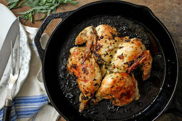

During these six months of unemployment, I have dedicated myself to listening to live music, cooking, taking naps, watching pro cyclying, and playing petanque.
|  | How to roast a very flavorful chicken |
| A really good spring risotto | |
| An easy mid-week lentil soup |
My first webpage, designed and written in a day at Le Wagon, Brussels, May 2017!